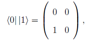
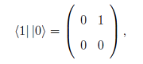
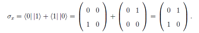
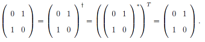

This Sigma X Operator
The X operator is one of the three Pauli matrices. It is also known as the NOT operator because it
is the |0> qubit to the |1> qubit and vice versa. It is Hermitian and unitary. It
is also referred to as the σx operator. On the Bloch sphere, it corresponds to a π rotation
around the x-axis. Knowing its mapping, we can derive the operator from the sum of the
outer products that represent the matrix. The outer products

and

form the full expression of the σx operator as

This is Hermitian and can easily be checked
